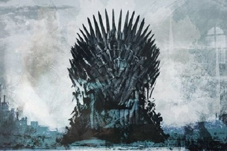

Navigation
Game of Thrones Fan Site
About Us
This fan site is dedicated up to only book five or season 5. I, along with may fans of the show are in agreement that the series went downhill quite fast beyond season 5. This is due to The TV series surpassing the original material and as a result, the writing quality fell off.
